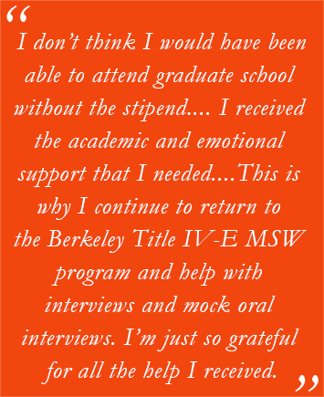

Rosie I. Hernandez Realizes Her Goal of Supporting Vulnerable Latino Communities
January 22, 2017
“A couple of adoptions in my family” and advice from a mentor inspired Rosie I. Hernandez to become a social worker. When considering career possibilities, she says, it was Lupe Gallegos-Diaz who suggested “the opportunities to help and support my Latino community. I then realized that this was my opportunity to help and support younger and more vulnerable populations as well as underprivileged communities.”
In pursuit of that goal, Rosie earned her BA in Social Welfare and Chicano Studies at UC Berkeley and continued at her alma mater as a recipient of the Title IV-E MSW Stipend. Fondly recalling her experience at Berkeley Social Welfare, she says, “I really enjoyed and benefited from being Title IV-E. I don’t think I would have been able to attend graduate school without the stipend.” For her, it was “perfect,” she says, noting that she’s remained in child Welfare for over 13 years.
Read more about the Title IV-E Stipend Program
At the time, Shaaron Gilson was the Project Coordinator, “and the amount of support I received was incredible,” says Rosie. “I received the academic and emotional support that I needed in order to complete the MSW program.” That experience made an indelible impression on her. “This is why I continue to return to the Berkeley Title IV-E MSW Program and help with Title IV-E interviews and mock oral interviews,” she explains. “I’m just so grateful for all the help I received.”
Helping the Latino Community
Fluent in Spanish and armed with her degrees, Rosie throughout her career has assisted the populations she intended to, most recently as the Bilingual Senior Child Welfare Worker–Court Officer at Marin County Children and Family Services, a position she’s held for the past four years.
Working primarily with the Latino community in child welfare, Rosie says, “Both my knowledge of the Spanish language and of Latino cultures is crucial in being able to offer culturally sensitive and competent services.
“I am Chicana, of Mexican descent, and the Latino population in Marin County is mostly composed of families from El Salvador and Guatemala. Knowledge about Indigenous Mayan traditions and even some knowledge of the Mayan dialects, which I learned in Chicano Studies, was instrumental in working with that community.” She recalls, “Years ago, I worked with a teen who spoke Quiche and Spanish and was Mayan. The minute I talked to him about the Popol Vuh, we connected and he was able to trust me and build rapport.”
‘I love court!’
In her current position, Rosie is intimately familiar with the law. “My W&I Code is all tabbed up, and I constantly attend law update trainings and read up on new case law,” she says. “Then there are updates on regulations, such as ICWA, that I have to become very familiar with and develop new protocol for my agency in order to be in compliance.” She notes that having worked in both the Emergency Response and Ongoing Units is a plus because she knows the child welfare process through both units.
“I love court!” says Rosie. “Not many social workers feel this way, but I truly enjoy the court atmosphere and process. I love the interaction with the judicial officer and all the attorneys. We are truly a team, despite having differences in opinion. It does become challenging when cases drag on and the permanency of a child is affected. Also, as was the case several years ago in our county, when there is a contentious and hostile court environment, that is never good for anyone and, most of all, for the families we work with.”
Wide Experience as Bilingual Child Welfare Worker
Prior to this position, Rosie held three different posts as a Child Welfare Worker II Bilingual-Spanish/English over almost 10 years. The first was the out-stationed worker in West Marin doing both Emergency Response and Ongoing (FM, FR, PP). “This was very challenging,” Rosie remembers. “It takes a very special person to fit in with that community and I never was that person.” She transferred to the main office and was in Ongoing (FM, FR, PP) for over two years. “This, too, became challenging for me; I didn’t really like having cases for so long,” she says.
This was followed by the Emergency Response (ER) Unit, where she stayed the longest. “I loved it!” she says. She was able to develop professionally in a position that fit her personality and work style. “I loved having referrals for a short amount of time and to offer resources to families. I just felt like I was able to do ’real social work’ and connect families to services and offer crisis intervention.”
She adds, “I also had the opportunity to be a forensic interviewer in our multi-disciplinary center, the Jeannette Prandi Center. I truly enjoyed my time in ER and I had an amazing supervisor, Raul Munoz, who was very supportive.”
Read stories about other CalSWEC alumni
After Rosie had her first son, Angel, the ER schedule was challenging. “ER is very unpredictable,” she notes. “When I had my second son, Joel, I couldn’t be a mom to them.” The Court Officer position was one she had her eyes on, and when it opened, “I went for it,” she says. “This position is a lot more flexible for my family and my sons’ activities, and I love and really enjoy court,” she reiterates.
Reflecting on her experience, Rosie says, “After over 13 years in child welfare, I think I have had a long career and still have a long time to go. I have been fortunate enough to work in different units and mature and develop professionally. I started working in Marin County when I had just turned 24 years old; I was such an inexperienced baby!
“Through the years here, and when I became a mother myself, I feel like I have been able to help and support my community and other underprivileged communities, which was the reason why I wanted to be a social worker in the first place,” says Rosie.
“I have a long road ahead because I plan on retiring from this county and this type of work. Being a social worker is my calling, part of my identity, and I plan on continuing to help and support children and families.”
Life beyond Work
Rosie’s extracurricular activities keep her busy as well. She has always loved soccer, and so do her sons. She is secretary for the San Pablo United Youth Soccer Club Board and manages two soccer teams, the U-9 San Pablo Lions and the U-8 San Pablo Dragons, for which she is also an assistant coach. Her husband Benny coaches the Lions. Son Angel is a Lion and the younger Joel is a Dragon. The boys started playing Pee Wee soccer “when they were both 2 years old and still in diapers,” says Rosie. “I’m very active with my sons and we’re always on the move.”
Sigma Pi Alpha Sorority, Inc. (ELLA), a Chicana/Latina sorority, which she joined as an undergraduate, also occupies Rosie’s time. She is currently Director of its Northern California Alumnae Association. She is also involved with the Founding/Alpha Chapter at UC Berkeley.
“It has become challenging to be as active as I would like in my sorority because of work and all my children’s activities, but my sorority and sisterhood are very important to me and are a huge part of my life,” says Rosie. “I actually met my husband through my sorority and his fraternity, Nu Alpha Kappa Fraternity, Inc.”